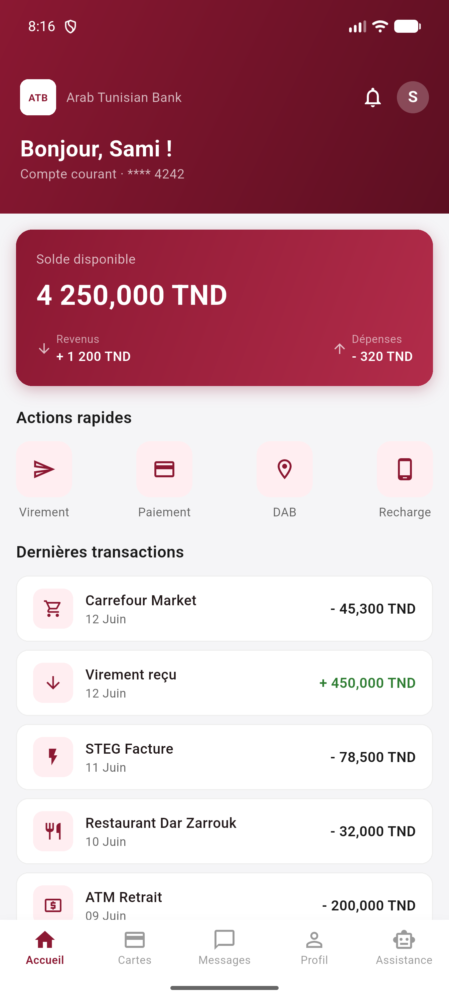
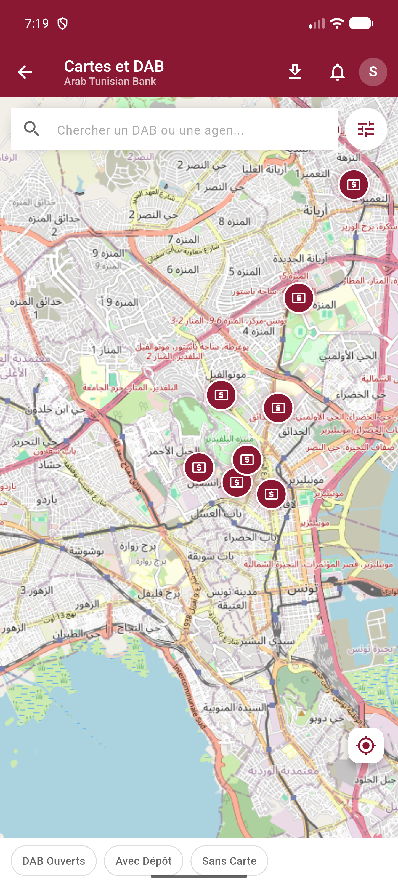
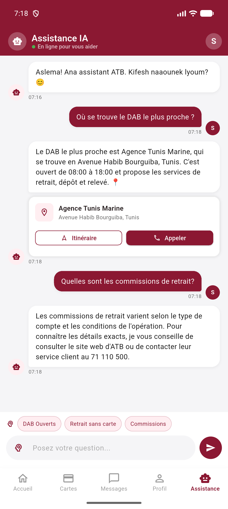
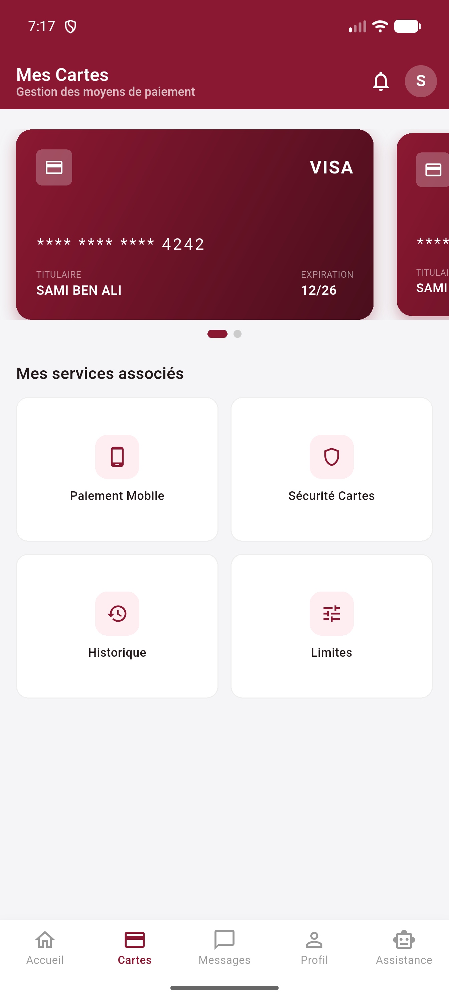
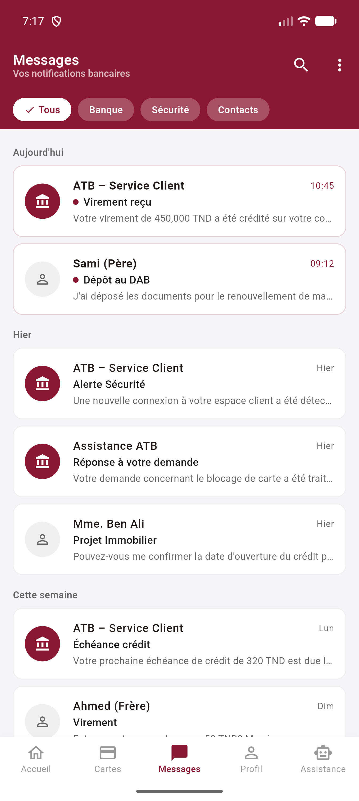
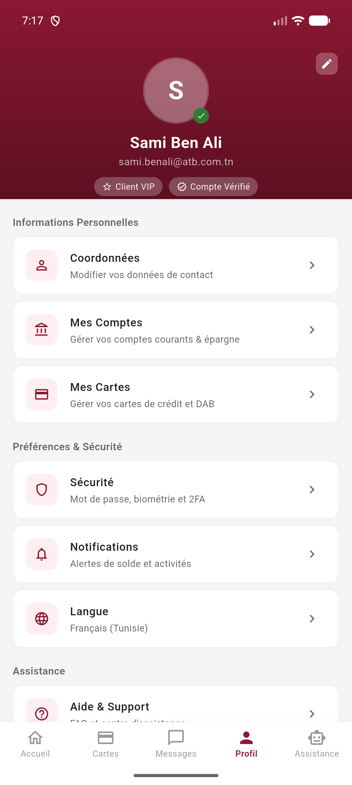

Une application bancaire de qualité production, développée de zéro en Flutter : un seul code source fonctionne à la fois sur Android et iOS. Elle adopte l'identité visuelle bordeaux officielle de la banque et fonctionne même sans connexion internet.
Aider les clients ATB à trouver le DAB / l'agence le plus proche, obtenir des réponses instantanées sur les services bancaires et gérer leurs cartes — depuis une seule application.
Des données DAB réelles issues d'OpenStreetMap, un assistant IA qui maîtrise le dialecte tunisien, et des cartes téléchargeables hors-ligne.
Une séparation nette entre models, services et screens. Aucun backend requis — elle communique directement avec des API publiques.
Emplacements des DAB en temps réel, marqueurs colorés, point GPS, filtres intelligents et navigation.
Groq LLaMA répond en derja tunisien, français et anglais, avec le contexte des DAB proches.
Carrousel de cartes, blocage, limites, historique des transactions, QR et paiement mobile.
Téléchargez des régions en MBTiles, reprise possible, fonctionne sans aucune connexion.
Notifications groupées par date, filtres Banque / Sécurité / Contacts.
Aperçu du compte avec réglages de sécurité, notifications et langue.
Une barre de navigation inférieure à 5 onglets, conservés dans un IndexedStack : le changement d'onglet est instantané et ne reconstruit jamais un écran.
La carte des DAB en plein écran est accessible via l'action rapide « DAB » de l'écran d'accueil, ce qui garde la navigation principale épurée tout en gardant la carte à un clic.
SliverAppBar) qui salue l'utilisateur (« Bonjour, Sami ! ») et affiche le numéro de compte masqué.
flutter_map + tuiles gratuites OpenStreetMap — aucune clé API requise.
Si le GPS est refusé ou que l'API Overpass est lente / injoignable, l'application bascule instantanément sur 20 DAB tunisiens préchargés (ATB, STB, BNA, BIAT, Zitouna, UIB, Amen…). La carte n'est jamais vide, même sans réseau.

// chat_service.dart messages = [ { role: 'system', content: personaTrilingue + dabProches }, // contexte ...10DerniersMessages, // mémoire { role: 'user', content: messageUtilisateur }, ]; POST https://api.groq.com/openai/v1/chat/completions model: 'llama-3.1-8b-instant' max_tokens: 512 temperature: 0.7 // dégradation gracieuse : si pas de clé / réseau coupé → // des réponses simulées en derja gardent la démo vivante
MBTilesTileProvider sur-mesure relie SQLite → flutter_map pour un rendu sans internet.| Région | Zoom | Taille est. |
|---|---|---|
| Grand Tunis | 10–15 | ~90 Mo |
| Sfax | 10–15 | ~45 Mo |
| Toute la Tunisie | 5–11 | ~80 Mo |
Le nombre de tuiles est calculé par les maths « slippy-map » ; les lignes sont stockées en ordre TMS. Conservé dans le dossier privé de l'app — aucune permission de stockage nécessaire.



lib/ ├─ config/ secrets (gitignored) + exemple ├─ models/ ATM · ChatMessage ├─ services/ logique métier & API │ ├─ atm_service // Overpass + repli │ ├─ chat_service // Groq LLaMA │ ├─ location_service // GPS + distance │ ├─ offline_map_service// MBTiles │ └─ mbtiles_provider // SQLite → carte ├─ screens/ home · map · cartes · messages │ profil · assistance · atm_detail ├─ theme.dart // couleurs de marque └─ main.dart // point d'entrée
secrets.dart gitignored avec un modèle versionné — sûr pour l'open-source.| Couche | Technologie | Pourquoi |
|---|---|---|
| Framework | Flutter 3.44 / Dart | Un seul code → Android & iOS |
| Cartes | flutter_map + OpenStreetMap | Gratuit, sans clé API, contrôle total |
| IA | API Groq · LLaMA 3.1-8B | Offre gratuite, inférence ultra-rapide |
| Données DAB | API Overpass | Vraies données OSM pour toute la Tunisie |
| Cartes hors-ligne | MBTiles (sqflite) | Un fichier par région, avec reprise |
| Localisation | geolocator | Permissions + calcul de distance |
| Réseau | http + Dio | Appels REST + téléchargement de tuiles |
| Navigation GPS | url_launcher | Liens profonds Google Maps |
Chaque écran suit la palette officielle d'ATB, appliquée via un unique thème Material 3 pour que couleurs et composants restent cohérents dans toute l'application.
Chaque appel externe (GPS, Overpass, Groq) a une solution de repli — DAB préchargés, réponses IA simulées, tuiles en cache. L'app reste utilisable hors-ligne ou si une API tombe.
Les téléchargements de tuiles enregistrent un point de contrôle au niveau de chaque tuile dans SQLite : une coupure ne coûte rien, ça reprend exactement où ça s'est arrêté.
L'assistant n'est pas générique — on lui fournit les vrais DAB proches de l'utilisateur et la conversation récente, donc les réponses sont précises et ancrées.
Les secrets sont isolés et gitignored avec un modèle versionné : les contributeurs peuvent lancer l'app sans jamais divulguer de clé.